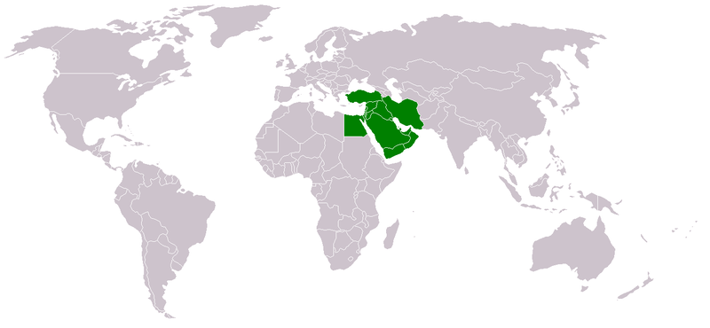
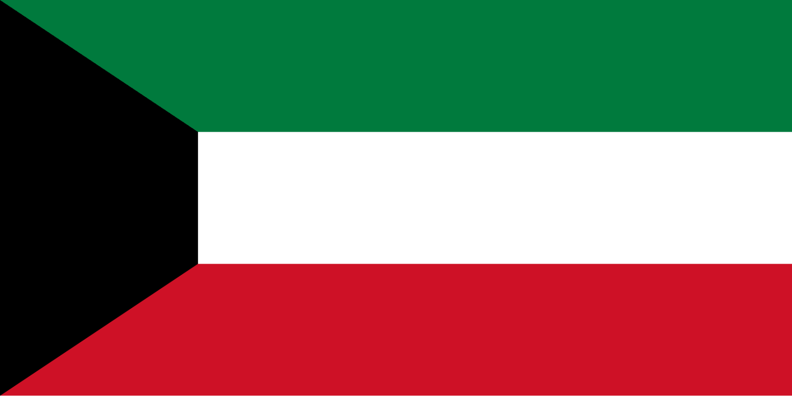
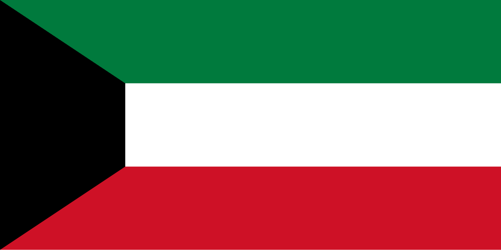

Oil in the Middle East
The Middle East produces about 22.7 million barrels per day or 954.4 million gallons per day. Kuwait and Iraq are close in percentages, with most of their economy coming from oil. However, countries like the UAE and Iran have less than 50% of their oil production going to their economy. Iran created an organization for producing oil called the National Iranian Oil Company (NIOC). Just like Iran the UAE also has an organization called ADNOC this one is the major one with 14 other less important companies to join together as one. Kuwait’s human activities are Sometimes it can be good like they pay 51.3% for services and sometimes it can be bad for people like when they only pay 0.5% for agriculture. Before the major oil production, Saudi Arabia, the UAE, and Iraq were all based on agriculture and farming. However, Iran and Kuwait spent more of their time with industry and riches.
What are the country's plans after a post-oil economy?
Iran will continue to produce and export some of their goods like petrochemicals, gas, textiles, cement and different construction materials, fertilizer, caustic soda, food processing, and many other things. The UAE is a very oil-based country but if it were to stop the production of oil the UAE could still produce agriculture, industry, and services. Some things they can sell and trade are aluminum, food, and tons more industry-based products. Iraq’s economy is very oil-based and their economy will crash after a post-oil economy. Saudi Arabia has been creating solar fields and wind turbines to produce energy.
What are the impacts of oil production in the Middle East?
In the UAE, there are lots of toxic gases being produced which is causing human health to decrease. So oil production is going down. In Iran, oil production is causing pollution in the Persian Gulf leading to mangrove deforestation and soon biodiversity will be reduced. Iraq and Saudi Arabia are struggling with oil polluting their waters, and Kuwait has oil-damaged and burning oil wells.
Oil Production
- UAE - 4 million barrels
- Iran - 4 million barrels
- Kuwait - 3 million barrels
- Saudi Arabia - 10.8 million barrels
- Iraq - 1 million barrels
Impact on Economy
- UAE - 33%
- Iran - less than 10%
- Kuwait - 97%
- Saudi Arabia - 60%
- Iraq - 90%
Image Gallery
 
